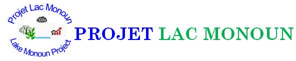

Acceuil
A Propos
Missions
Perspectives
Gallerie
Images
Evolution Temporelle
Contacts
Evolution Temporelle des Evenements Autour du Lac Pendant les 38 Dernieres Années
15 Aout, 1984
Evolution chronologique autour du Lac.
Mars, 1987
Création de IWGCL (International Working Group on Crater Lakes) lors de la Conférence Internationale sur le Lac Monoun et Nyos à Yaoundé.
Octobre, 1990
IWGCL informe le Gouvernement camerounais sur la nécessité de mener des études préalable au dégazage.
Mars, 1992 - 1995
Essai du Système de dégazage au Lac Monoun (tuyau de 50 mm) et Nyos (tuyau de 150 mm).
Octobre, 1999
Création du Projet Nyos et Monoun (NMDP).
Janvier, 2001
Installation du système d’alarme au Lac Monoun.
Janvier, 2003
Installation du tuyau de dégazage de 100 mm au Lac Monoun.
Février, 2006
Installation du tuyau de dégazage de 100 mm au Lac Monoun.
Aout, 2009
Arrêt du système automatique de siphonage, délabrement et vétusté des infrastructures.
Janvier, 2011
Lancement du Projet SATREPS Nyos-Monoun.
Novembre, 2011
Constat de la recharge du CO2 au fond du lac.
Mars 2013
Installation du premier système de pompage en eau profonde au Lac Monoun.
Mars 2015
Organisation des échanges et causeries éducatives avec les populations de Njindoun pour les préparer à faire face aux risques d’explosion du Lac.
Mars 2016
Organisation de la 9ème conférence sur les lacs volcaniques à Yaoundé sur le partage des résultats (SATREPS 2011-2016 Nyos-Monoun) et projection du Projet Post SATREPS.
Juin 2019
Création du Projet Lac Monoun à la faveur de l’Arrêté N°055/CAB/PM du 03 Juillet 2019 du Premier Ministre Chef du Gouvernement.
Décembre 2019
Nomination du Coordonnateur de l’Unité Opérationnel du Projet Lac Monoun par le Premier Ministre Chef du Gouvernement.
Décembre 2019
Désignation des membres du Secrétariat Techniques du Comité de Pilotage représentant les Ministères et Organismes sectoriels.
Décembre 2019
Désignation du Coordonnateur du Secrétariat Technique du Comité de Pilotage par le SGPM, Président dudit Comité.
Novembre 2020
Appel à candidature et recrutement des Chefs des composantes scientifique, technique et socio-économique.
Mars 2021
Désignation des membres du Comité Local de Suivi par le Préfet du Département du Noun, Président dudit Comité (Décision N°024/DP/F32/SAAJP).
Juin 2022
Elaboration et validation du Plan Stratégique Opérationnel du Projet Lac Monoun à travers l’atelier du 20 au 25 juin 2022.
Septembre 2022
Descente de reconnaissance du domaine de la DUP du Lac.
Avril 2023
Production du Document Projet Lac Monoun (PRODOC MONOUN).
Février 2024
Installation de la 2eme Deep Water Removal System.